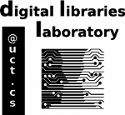

Home Research Projects

I am an MSc student in the Department of Computer Science at the University of Cape Town and I received my BSc degree from the University of Zambia. My supervisor is Associate Professor Hussein Suleman and I am a member of the Digital Library Research Laboratory. My other interests include Web standards, Information Retrieval and Database Systems (I worked with monstrous database systems in my previous life and got a sense of appreciation of what these beasts are capable of doing... believe me when I say this, we need them; well@ least for now).